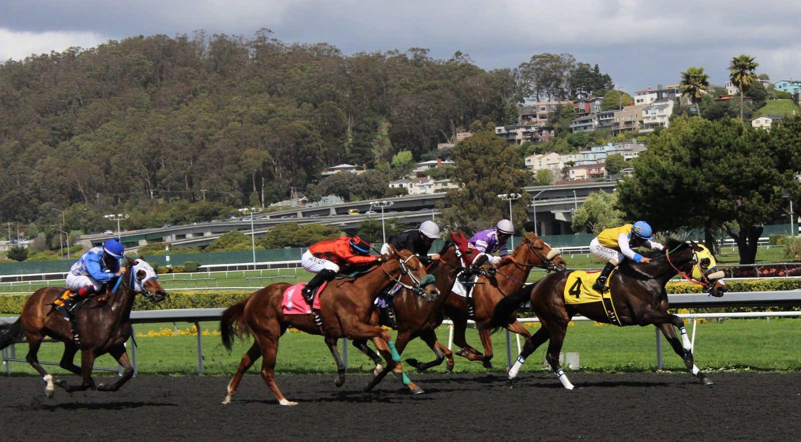

El calendario británico de carreras, atado de manos por la propiedad de los hipódromos
Con 1.440 reuniones previstas para 2027, mover fechas en Gran Bretaña es casi imposible: el 85 % pertenece a los hipódromos y solo el 15 % está arrendado por la BHA.

El reparto de la propiedad explica por qué el calendario británico apenas se deja tocar. De las 1.440 reuniones fijadas para 2027, alrededor del 85 % son de los propios hipódromos; el 15 % restante lo arrienda la BHA a las pistas. Quien quiera recolocar fechas choca con ese muro.
El origen está en 2007. Al crearse la BHA, el reconocimiento de que los hipódromos eran dueños de sus reuniones quedó recogido en el Memorandum of Understanding que sostiene su constitución. Nunca se ha impugnado ante un tribunal, pero ha funcionado como precedente establecido y, en palabras del columnista Richard Hoiles, como un corsé para cualquier cambio.
Hoiles, que lleva una década dando la misma respuesta cuando le preguntan qué cambiaría en las carreras (el calendario), describe un debate cada vez más polarizado. De un lado, quienes piden un recorte drástico del número de reuniones. Del otro, quienes defienden mantener lo que hay y apostar por una «agenda de crecimiento» que mejore los ingresos del sector.
Su lectura es que la salida pasa por un punto intermedio. Considera que los cambios radicales son ya casi imposibles, y que la cuestión es qué se puede hacer para fomentar el crecimiento dentro de ese marco.
Ese matiz lo apuntó recientemente Simon Cox, nuevo presidente de la BHA, en una entrevista en el pódcast de Nick Luck, que Hoiles calificó de alentadora.
Por Martín Larrañeta